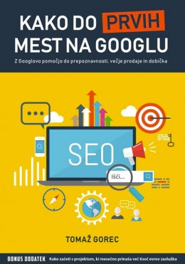
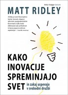
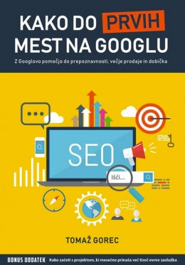
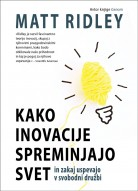

| Knjiga | Avtor | Založba, leto izdaje | Opis | Cena |
|---|---|---|---|---|
 |
Tomaž Gorec | Učila International, UMco, 2020 | Z Googlovo pomočjo do prepoznavnosti, večje prodaje in dobička.več> | 41,00€ |
 |
Matt Ridley | Spletni partner, 2018 | Kako inovacije spreminjajo svet in zakaj uspevajo v svobodni družbi.več> | 19,90€ |
|
Bojan Kraut | Buča, Littera picta, 2019 | Krautov strojniški priročnik je izvirna slovenska strokovna knjiga z najdaljšo tradicijo oz. kontinuiteto ponatisov ter novih, razširjenih in izboljšanih izdaj. Tudi če tehniške stroke in njihove priročnike primerjamo v merilu celotne nekdanje Jugoslavije, je po njegovi zaslugi na prvem mestu slovensko strojništvo.več> | 39,90€ |
| Mariana Mazzucato | UMco, 2018 | Podjetniška država: Razkrinkavanje zmot o javnem in zasebnem sektorju po vsem svetu vzbuja še kako potrebno debato o vlogi države pri stimulaciji gospodarske rasti, do katere pripeljejo dolgoletne inovacije.več> | 19,90€ | |
| Adam Alter | Mladinska knjiga, 2019 | Kako nas tehnologija zasvoji, industrija pa to izkoristi.več> | 32,99€ | |